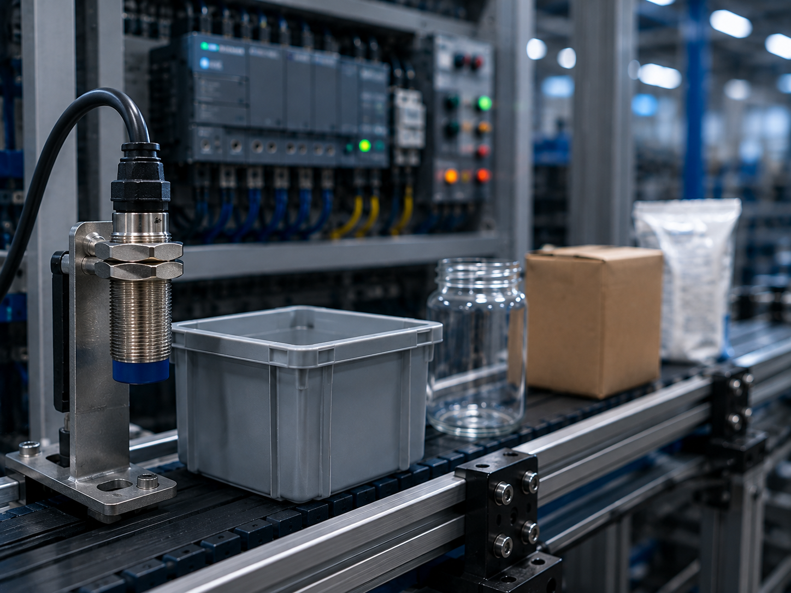
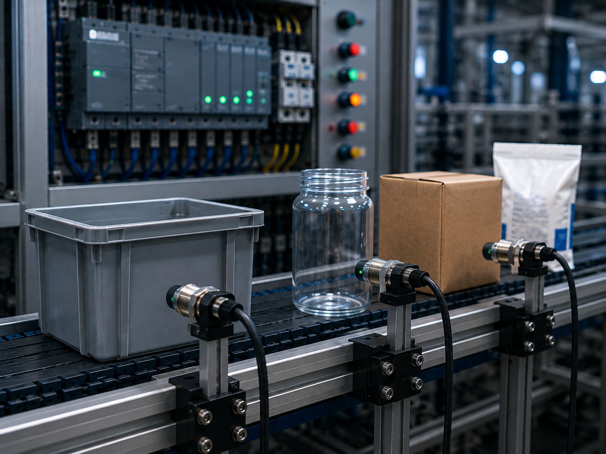
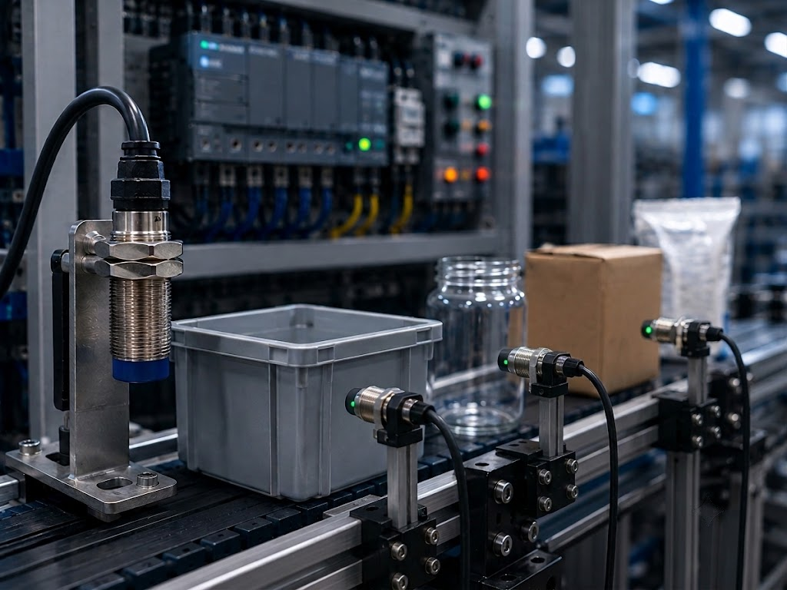

Capacitivo
Sensor eletrônico que detecta materiais metálicos e não metálicos sem contato físico.

Conceito e Aplicação
O sensor capacitivo é um dispositivo eletrônico utilizado para detectar a presença ou ausência de materiais metálicos e não metálicos sem necessidade de contato físico, operando por meio da variação de um campo eletrostático. É amplamente aplicado na automação industrial para detecção de nível de líquidos e grãos em reservatórios, verificação do conteúdo em embalagens fechadas (como caixas e frascos), e monitoramento em linhas de envase e esteiras transportadoras.
- Detecta objetos metálicos e não metálicos sem contato mecânico;
- Utilizado no controle de nível de líquidos e insumos em pó ou grãos;
- Aplicado na verificação de embalagens e na automação de processos industriais.
Informações Complementares

Funcionamento
Gera um campo magnético de alta frequência. A aproximação de um metal altera esse campo, acionando o sinal de saída instantaneamente.
Saiba Mais
Aplicações
Detecta plásticos, vidros, líquidos e metais sem contato físico. Usado em telas touch, reservatórios e automação industrial.
Saiba Mais
Vantagens
Sem contato físico e sem desgaste, o sensor capacitivo oferece alta durabilidade e precisão. Sua grande vantagem é a versatilidade.
Saiba MaisEmpresas
As principais empresas que fabricam sensores capacitivos são referências no setor de automação industrial e detecção de materiais. Em 2025, diversas marcas se destacam pela inovação tecnológica, sensibilidade e versatilidade de seus sensores para os mais variados tipos de aplicações.
A Turck, a Pepperl+Fuchs, a Sick, a Balluff e a Carlo Gavazzi são algumas das principais fabricantes de sensores capacitivos utilizados no controle de nível, detecção de objetos metálicos e não metálicos e posicionamento de precisão. Seus produtos são amplamente aplicados nas indústrias alimentícia, farmacêutica, plástica, química e de embalagens.
TURCK: Multinacional alemã especializada em soluções completas de sensores industriais. Seus sensores capacitivos oferecem alta imunidade a interferências, permitindo a detecção confiável de objetos metálicos e não metálicos através de paredes de tanques e recipientes não condutores.
PEPPERL+FUCHS: Líder global em tecnologia de sensores e sistemas de automação. Desenvolve sensores capacitivos de alta performance para detecção de nível, posição e presença de materiais sólidos, líquidos e granulados em ambientes industriais severos.
SICK: Empresa alemã de tecnologia em sensores, reconhecida por soluções inteligentes em automação. Seus sensores capacitivos possuem longo alcance de detecção e alta sensibilidade, sendo ideais para aplicações que exigem a identificação de materiais como vidro, plástico, madeira e líquidos.